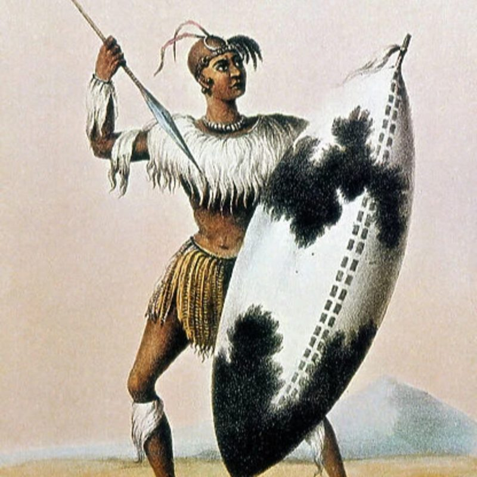

Horns of the Bull — Impondo Zenkhomo
He forged a nation from a cattle-herding chiefdom — and his brothers killed him for it.

Horns of the Bull — Impondo Zenkhomo
He forged a nation from a cattle-herding chiefdom — and his brothers killed him for it.
Feature map
Level-by-level features, as the figure refined them.
Assign the Bull
Bonus action · 1 CE.
Choose one hostile Quarry you can see within 60 feet, and assign four willing creatures to the bull's roles — Chest, Left Horn, Right Horn, Loins Reserve. You may take one role yourself; no creature holds two roles. The formation lasts 1 minute. Your technique DC uses your CE ability — choose CHA or STR at creation (locked). Roles go only to the willing: this is the formation's gate.
Chest Holds
Passive.
If the Chest begins and ends its turn within 10 feet of the Quarry (or the Chest's reach, if longer), the formation is Fixed. When a Fixed Quarry moves away from the Chest, the Chest may use its reaction to follow 5 feet — debited from the Chest's next turn's movement. Printed out: Fixed ends when the Chest leaves reach. Every state of the formation has a printed exit.
Horns Close
Free (no action).
After the Chest hits the Quarry with an attack, each Horn may shift up to 5 feet around the Quarry — no action, once per round each, toward opposite sides. When both Horns are within reach of the Quarry on opposite sides, it is Surrounded until the geometry breaks. Printed outs: Surrounded ends when both Horns are forced to the same side, all three roles lose reach, or the Quarry moves vertically or teleports. You will see the horns closing.
Loins Commit
Reaction.
The Loins hold outside the Quarry's reach as the reserve. When a role-holder is incapacitated, displaced 15 or more feet, or leaves the formation, the Loins may use their reaction to move up to half their speed and inherit the broken role. The reserve is the breach answer — the formation heals.
Encirclement
Passive.
A Surrounded Quarry treats its first 10 feet of movement each turn as difficult terrain. If the Quarry takes the Disengage action, it avoids opportunity attacks from only one role-holder that turn — the horns still close.
Living Formation
No action · once per round.
Once per round, after any formation member moves, you may swap two willing members' roles — no action. The swap grants no extra actions or movement.
Maximum, Domain, or equivalent.
Capstone material.
The Bull Closes
While the Quarry is Surrounded, the formation self-corrects: once per round, when the Quarry exits a member's reach, another member may use their reaction to move up to 10 feet into the vacated arc. Printed outs: scatter the roles, move vertically or teleport, incapacitate members. There is no invisible cage.
The Bull Remembers
The formation that refused to end. The Loins may hold a second role simultaneously — the reserve deepens — and if Surrounded is broken, the formation re-forms at the start of your next turn without a new assignment, provided at least two willing members remain. The bull remembers its shape.
Build-defining options.
This technique grants Innate Technique Feats — hand-authored applications of the figure's art, available in the builder's feat picker when you select this technique.